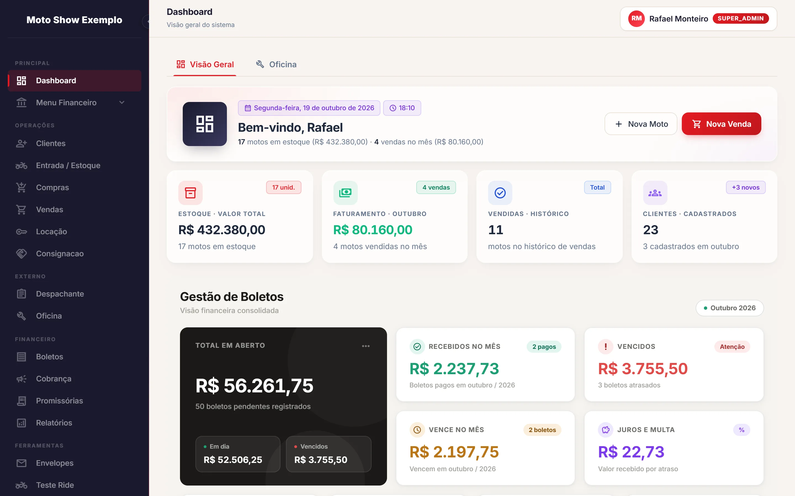
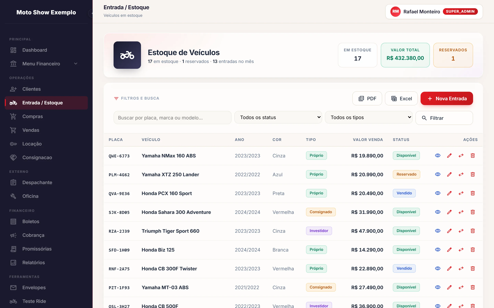
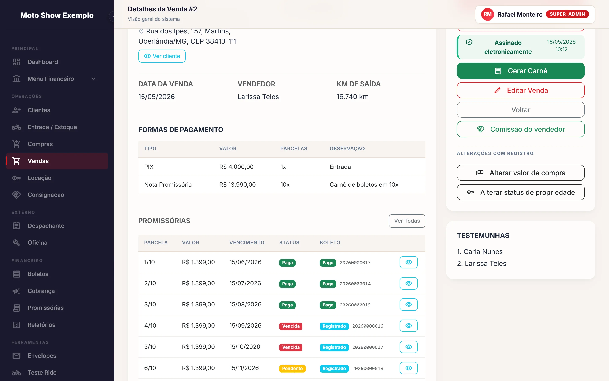
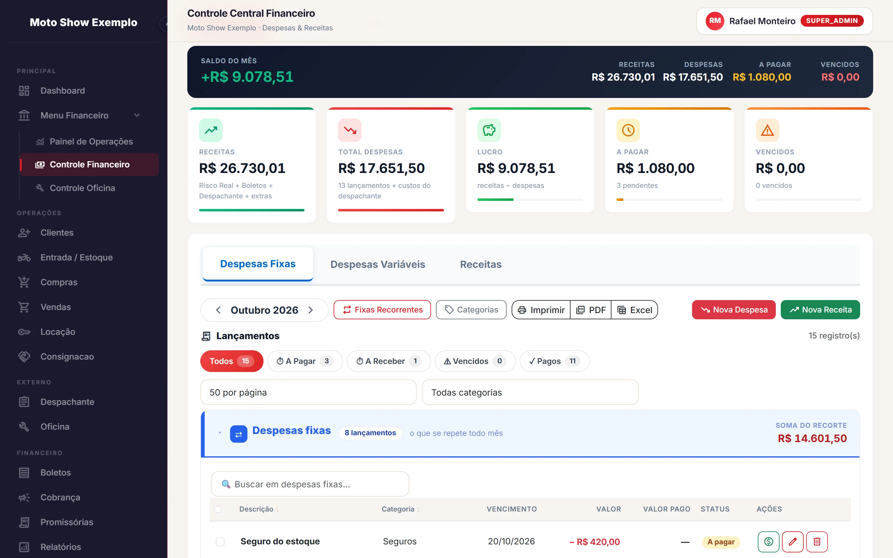
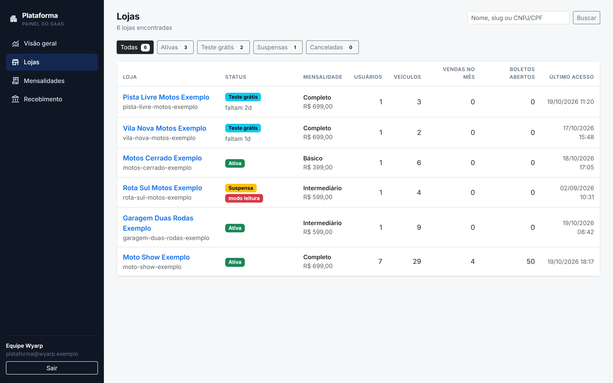
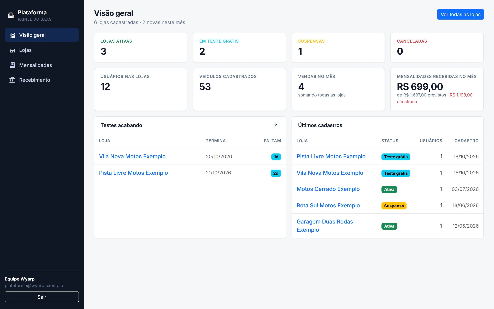
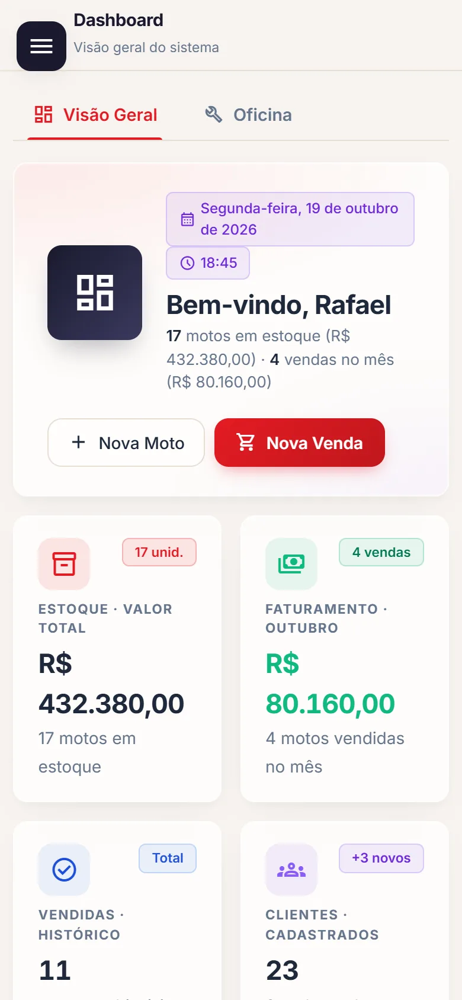
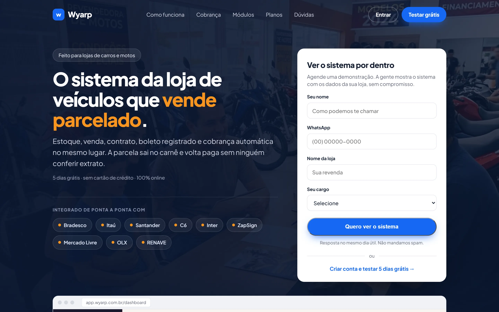

Estudo de caso 02 · ERP e SaaS
Wyarp MotoSYS
ERP para lojas de motos que cobre o ciclo inteiro, da entrada da moto no estoque à baixa automática do boleto. Começou numa loja piloto e virou um SaaS multi-empresa.








O problema
Lojas de motos usadas vendem no crediário próprio, com promissórias e boletos. Estoque, preparação, contratos, cobrança e investidores ficavam em planilhas, e cada boleto era emitido e conferido à mão no site do banco.
O sistema integra esse ciclo inteiro e automatiza o que mais tomava tempo: emitir e baixar boletos, colher a assinatura do contrato e manter os anúncios atualizados.
O que o sistema faz
- Estoque com ciclos de entrada e saída, fotos, custos, consignação, troca, test-ride e consulta por placa.
- Ordens de serviço da preparação e da oficina.
- Venda que gera contrato assinado na ZapSign e transforma as parcelas em boletos ou carnê, com baixa automática e régua de cobrança.
- Investidores com rateio de lucro por moto, retiradas e portal próprio, além de um portal para o cliente.
- Anúncios sincronizados com OLX, Mercado Livre e Na Pista, e leitura de documentos por IA.
- Camada SaaS: cadastro de loja com período de teste, planos que liberam módulos, mensalidade cobrada pelo Banco Inter e painel de suporte com personificação registrada em log.
Minha parte
O projeto teve dois desenvolvedores. Fiquei com as partes que ligam o sistema ao mundo de fora e com a virada para SaaS:
- Integrações bancárias com Bradesco, Banco do Brasil e Caixa, e a mensalidade pelo Banco Inter.
- Contrato digital pela ZapSign e sincronização com os marketplaces.
- Camada multi-empresa e a migração das lojas existentes para ela.
- Servidor MCP e integração com a API RENAVE do SERPRO.
Decisões técnicas
Bancos com mTLS e conciliação
O Bradesco exige mTLS com certificado e OAuth2. Os webhooks de liquidação dos bancos são validados por middleware e processados em fila, e rotinas agendadas consultam e conciliam os boletos que o webhook não confirmou.
Multi-empresa num banco só
Um trait aplica um escopo global de loja em todos os models, e os jobs carregam o contexto da loja que os disparou. Um teste de isolamento garante que uma loja nunca enxerga dados de outra.
Migração das lojas existentes
Um comando leva cada loja do banco MySQL antigo para o PostgreSQL multi-empresa, renumerando os IDs sem quebrar as referências entre tabelas.
Um servidor MCP para auditar a loja com IA
Servidor JSON-RPC 2.0 com cerca de 20 ferramentas, como raio-x de veículo, listagem de vendas e consultas SQL somente leitura que passam por um sanitizador. É protegido por token.
Operação e LGPD
Backup automático para o Backblaze B2 com monitoramento, Sentry com remoção de dados pessoais e PWA com notificações push.
Em números
Desdobramentos
A mesma base virou o ERP Celulares, para lojas que vendem iPhone no crediário. O domínio foi adaptado de "moto" para "aparelho" e ganhou bloqueio remoto por MDM Apple e cinco gateways de pagamento.
Stack
- Laravel 12
- PHP 8.4
- PostgreSQL
- MySQL
- Blade
- Alpine.js
- Tailwind
- Vite
- Sanctum
- DomPDF
- Sentry
- Backblaze B2
- PWA